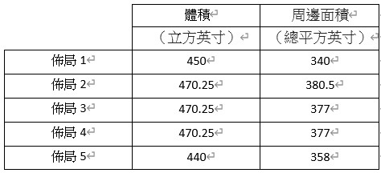

OBS <<
Previous Next >> Week 7
翻譯
翻譯MechanicalDesignProcess.pdf 第二章節 Building the Design後半部(P27~P33)
Footnote: (Statistical note) Some designers would make a case for some statistical probability, less than 100%, that all (4) tolerances would go in one direction, and we would not (likely) have a total of 0.025 inch. Some conservative designers would assume that all tolerance will go in the “wrong” direction, and thus，design is a “worst case.” I’ll generally disregard the “statistical” approach to tolerances for now, but it could be valuable in design situations where space is extremely constrained. See Sect. 4.8 for a discussion of:
- Tolerancing using sum of squares
- Tolerancing using Monte Carlo simulation
註記:(統計說明)某些設計師會提出一些統計概率，小於100％，則所有（4）公差將沿一個方向，而且我們(可能)不會總計有0.025英寸。 一些保守的設計師會假設所有公差都將朝“錯誤”的方向發展，因此，設計是“最壞的情況”。 我現在通常不會理會公差的“統計”方法，但在空間非常受限的設計情況下，這可能會很有價值。 參見章節。 4.8討論：
- Movement of the Object relative to the Wall (during product operation): This is also known as “sway” clearance, that is, the object may vibrate in operation while the wall could be steadfast
2.物體相對於牆壁的運動（在產品運行過程中）：這也稱為“搖擺”間隙，也就是說，物體可能在運作時振動，而牆壁可能會保持堅固。
- Growth of the Objects (during operation): This could be the result of thermal expansion.
3.物體的膨脹（在操作過程中）：這可能是熱膨脹的結果。
4.Overall (outside) size constraints: Internal clearance distance will be affected by the overall size. That is, with a given overall size, the distance between objects will have some particular limit. The distance between objects will be a function on the size tolerances of the objects and the tolerances on the Object locations. If the overall size is not constrained (rare instance), Object size and clearances between Objects will determine the overall size.
4.整體（外部）尺寸限制：內部間隙距離將受到整體尺寸的影響。也就是說，對於給定的整體大小，物體之間的距離將有一些特定的限制。物體之間的距離將取決於物體的尺寸公差和物體位置的公差。如果總體尺寸不受限制（稀少例子），則物體尺寸和物體間隙之間的大小將決定整體大小。
2.4.2 Object Arrangement
2.4.2物體排列
The designer usually works to minimize the overall dimensions of the enclosure by a “productive” arrangement of all of the Objects needed to fit within the enclosure.
設計師通常會通過“生產”排列所有適合安裝在外殼中的物體的方式來最大程度地減小外殼的整體尺寸。
This can be done in two dimensions (X and Y) and the 3rd dimension, Z. Other arrangements of Objects look to fulfill assembly, servicing, aesthetic, or user interface needs.
這可以在兩個維度（X和Y）以及第三個維度Z中進行。物體的其他排列旨在滿足組裝，維修，美觀或用戶界面的需求。
In order to minimize the overall dimensions, some distance between Objects is chosen. This distance can be first thought of as a nominal distance.This nominal distance can then be adjusted to suit the design. For example, one could assume a nominal distance between objects of 0.100 inch (in all directions).
為了最小化整體尺寸，決定了物體之間的一定距離。 該距離可以首先被認為是公稱距離。 然後可以調整該公稱距離以適合設計。 例如，可以假設物體之間的標稱距離為0.100英寸（在所有方向上）。
Of course, the gap size would not have to be the same between all objects. Perhaps the 0.100 “gap” between objects produces an overall dimension that exceeds the expectations of the product (exceeds the product specification).
當然，所有物體之間的間隙大小不必相同。 物體之間的0.100“間隙”可能會產生超出產品期望值的總體尺寸（超出產品規格）。
Then, the designer would look to reduce the 0.100 inch gap – but, the gap cannot be less than zero, and it cannot be less thanany “worst-case” problem such as an Object being supplied at the upper end of its size tolerance or other factors explored below.
然後，設計人員將尋求減少0.100英寸的間隙-但是，間隙不能小於零，也不能小於任何“最壞情況”的問題，像是在其尺寸公差的上限提供了一個物體，或者探討下面其他因素。
Then, the designer checks to see that all of the Objects in the enclosure have been placed and that the gaps between Objects are such that all interference between Objects is avoided under all environments and user experiences that the design will exist in.
然後，設計人員檢查是否已放置了外殼中的所有物體，並且物體之間的間隙是否能夠避免在此設計上的所有環境和用戶使用上的所有干擾。
The designer will also check to see that the Objects can be assembled into the enclosure in a “forthright” manner and that the service objectives of the product are upheld.
設計人員還將檢查是否有以“直覺”的方式將物體組裝到外殼中，以及確保產品的售後服務與維護。
The design is ready for the Design Review Process.
該設計已準備可以進行審核過程。
Reviewing, gaps between volumes (or objects) are a function of:
以下功能是查看，體積（或物體)之間的間隙:
- Fabrication tolerances: A given “box” may be specified as a nominal dimension.
However, a slightly larger (or smaller) box results when the supplier fabricates the box to the allowable outer limits of the nominal dimension.
但是，當供應商按照標準尺寸允許的外部極限來製造盒子時，會導致盒子略大（或更小）。
- Cooling requirements: A certain component may have to be spaced a minimum
distance from another component so that this component is not thermally affected
to an intolerable extent. In some heat-dissipative situations, components must be
placed as close as possible (attached to each other).
- 冷卻要求：某些組件可能必須與另一個組件的距離是最小間隔，以便該組件不受熱影響，在某些散熱情況下，組件必須盡可能靠近放置（彼此連接）。
- Assembly and serviceability requirements: Components may need certain spaces between them due to clearance required to either assemble or disassemble the components.
- 組裝和維修要求：由於組裝或拆卸組件需要一定間隙，組件之間可能需要保持一定的空間。
- Future additions to product (options): Volume may be required for planned additions or product options.
•產品（選件)未來的增加：計劃添加或產品選件可能需要數量。
Looking back at our original intention, to locate an object, 0.100 inch from a wall, we can see that, when we get into the detailed design, we will have to be careful with this 0.100 inch nominal clearance, (shown by the above discussion on tolerances) as this distance can easily “shrink” (in its worst case) from 0.100 inch to 0.100 minus 0.025 (=0.075 inch). Of course, it could be increasing to 0.100 plus 0.025 (=0.125 inch), also. In the “sketch” design phase, we wouldn’t be that concerned with this dimension; again, it would become more important as the design moves to the prototyping phase.
回顧我們最初的意圖，即找到距牆壁0.100英寸的物體，當我們進入詳細設計時，我們將必須謹慎對待此0.100英寸的標稱間隙（如以上討論所示） 公差），因為該距離很容易從0.100英寸縮小到0.100-0.025（= 0.075英寸）（在最壞的情況下）。 當然，也可以增加到0.100+0.025（= 0.125英寸）。 在“草圖”設計階段，我們不必擔心這個尺寸； 同樣的，隨著設計進入原型開發階段，這將變得更加重要。
All of the above concentration on this 0.100 inch dimension is meant to illustratethat “some distance” is designed between objects (in this case, an object and a wall).
In most designs, the overall size of the object must be minimized. This leads most designs to have the least possible distance between objects as possible. Examples of designs where overall size (and resulting weight) are minimized would be computer housing, coffee maker, or other household appliance. We live in a world where
smaller size (usually) equates to:
- Smaller weight (better fuel savings or ease of use)
- Smaller ecological footprint (savings on materials)
- Saving of space in space-limited situations
- Lower costs (for consumer or producer)
在0.100英寸尺寸上的所有上述集中旨在說明在物體（在這種情況下，是物體和牆壁）之間設計了“一定距離”。
在大多數設計中，必須使物體的整體尺寸最小。 這導致大多數設計在物體之間的距離盡可能小。 使總體尺寸（和所產生的重量）最小化的設計示例包括計算機外殼，咖啡機或其他家用電器。我們生活在一個較小的世界中（通常）是:
- 重量更輕（更好地節省燃料或易於使用）
- 較小的生態足跡（節省材料）
- 在空間有限的情況下節省空間
- 降低成本（對於消費者或生產者）
In some cases, it will not be the least possible distance that is desired. Complications such as heat dissipation, or mechanical coupling (say, in a gear drive), certainly affect the distance between objects. We have been “simplifying” the design process in our examples
在某些情況下，它不是所需的最小距離。
諸如散熱或機械耦合（例如齒輪傳動）之類的並發症
驅動器），當然會影響物體之間的距離。 我們一直在“簡化”
我們的示例中的設計過程
So, for our example of the 0.100 inch distance between the object and the wall, the designer would actually be challenged to determine what minimal distance this could be (e.g., if this distance was 0.050 inch, our overall product could be smaller).
因此，對於我們的物體與牆壁之間0.100英寸距離的示例，設計人員實際上將面臨挑戰，以確定這可能是最小的距離（例如，如果該距離為0.050英寸，則我們的整體產品可能會更小）。
Could this distance shrink even further? (Keep in mind that we came up with an “uncertainty” in this distance in the amount of 0.025 inch.)
這個距離會進一步縮小嗎？ （請記住，我們在此距離上產生了0.025英寸的“不確定性”。）
In the “sketch phase” of the design, it may not be important to determine this distance exactly. In the interests of proving the overall design in a very quick manner, the designer may make this distance 0.125 inch and get into the details of reducing this distance as the design proves some success.
在設計的“草圖階段”，準確確定該距離可能並不重要。 為了以非常快速的方式證明整體設計的利益，設計人員可以使此距離為0.125英寸，並在減小設計距離的細節上獲得成功，因為設計證明是成功的。
The wall thickness is usually a function of:
- Strength required for product operation
- Weight constraints for product
- Fabrication technique
壁厚通常擁有以下功能的函數：
Wall thickness doesn’t have to be “constant,” that is, it can vary either by the addition of ribs or gussets or the fabrication method that may allow local variation in thickness.
壁厚不必“不變”，即可以通過添加肋骨或角撐板或可以允許局部變化的製造方法來變化厚度。
2.4.3 Object Arrangement Example (Fig. 2.3)
2.4.3對象排列示例（圖2.3）
So far, in our discussion of locating two Objects (a wall and an object), we have been simplifying the discussion with just two dimensions. We will expand into three dimensions in this section. Let’s take our example of Object arrangement a step further. Let’s take a look at several ways to locate two objects inside of an enclosure and see what options we have.
到目前為止，在我們關於定位兩個物體（一堵牆和一個物體）的討論中，我們僅用二維簡化了討論。 在本節中，我們將擴展為三個維度。 讓我們以“物體排列”為例。 讓我們看一下在機櫃中定位兩個對象的幾種方法，看看我們有哪些選項。
For the purposes of this example, let’s say that the two Objects are both “bricks” (literally a brick), with the approximate dimensions of:
- 2.5 inches thick
- 3.5 inches wide
- 8.0 inches long
就本示例而言，假設兩個對像都是“磚”（字面上是磚），其近似尺寸為：
In our 2D example, we will forget about the “thickness” and just use the 3.5 × 8.0 width and length dimensions. So, we basically have a rectangle that is 3.5 × 8.0. (We will come back to the 3D example, further on, as this adds more choices for us.) See Fig. 2.3.
在我們的2D示例中，我們將忽略“厚度”，而僅使用3.5×8.0的寬度和長度尺寸。 因此，我們基本上有一個3.5×8.0的矩形。 （我們將進一步回到3D示例，因為這為我們添加了更多選擇。）請參見圖2.3。
Now, let’s say that our basic starting point in the design is to house two bricks, Brick A and Brick B (both with the same dimensions), in an enclosure. At this initial point, we have no constraints of:
- Overall size or shape of enclosure
- Cost of enclosure material
現在，假設我們設計的基本出發點是將兩個磚塊，磚塊A和磚塊B（尺寸相同）容納在一個封閉空間中。在開始時，我們沒有以下限制：

We can easily envision (at least) five different ways to locate Brick A and Brick B relative to each other, producing very different enclosures. Of course, there are more than five different ways, but I’ve chosen the standard “Cartesian” arrangement of bricks in which they are parallel or aligned to each other. Let’s look at these five different layouts and comment a bit about why one might have some advantages (over the other layouts). A constant one inch is assumed between Brick A and Brick B, and that same one inch clearance is assumed between a brick and a wall (side, top, or bottom).
我們可以輕鬆地設想（至少）五種不同的方式來相對於磚塊A和磚塊B定位，從而產生截然不同的外殼。 當然，有超過五種不同的方式，但是我選擇了標準的“笛卡爾”磚排列，其中磚彼此平行或對齊。 讓我們看一下這五個不同的佈局，並評論一下為什麼一個佈局可能比其他佈局更具優勢。 磚塊A和磚塊B之間假定一個恆定的1英寸，磚塊和牆壁（側面，頂部或底部）之間假定一個相同的1英寸間隙。
- Layout 1: Brick A and Brick B side by side along width
- Layout 2: Brick A and Brick B aligned along length
- Layout 3: Brick A and Brick B in “L shape”
- Layout 4: Brick A and Brick B in “T shape”
- Layout 5: Brick A and Brick B “stacked” (a 3D version – this is the only layout that has used the “3rd Dimension”)
- 版式1：沿著寬度並排放置磚塊A和磚塊B
- 佈局2：磚塊A和磚塊B沿長度對齊
- 佈局3：“ L形”的磚塊A和磚塊B
- 版式4：“ T形”的磚塊A和磚塊B
- 版式5：“堆疊”磚塊A和磚塊B（3D版本-這是唯一使用“三維”的版式）
Now, let’s analyze the five layouts. (For all of the layouts, let's assume a very thin-skin for the enclosure that adds essentially zero to the enclosure width, length, and height. Also, we'll neglect the rounded corners that an enclosure might have, and just assume square corners).
現在，讓我們分析五種佈局。（對於所有佈局，我們假設外殼的外觀非常薄，實際上使外殼的寬度，長度和高度增加了零。此外，我們將忽略外殼可能具有的圓角，而僅假設方正角落）。
- Layout 1 is seemingly the simplest layout, ending with a relatively square shape
for an enclosure. Resulting enclosure is 10 × 10 × 4.5 high. The six sides (areas) are 2 × (10 × 10) + 4 × (10 × 3.5).
- Layout 2 is “long,” rather than “square.” This type of enclosure may have unique applications, such as for better utilization of desk space. Resulting enclosure is 19 × 5.5 × 4.5 high. The six sides (areas) are 2 × (19 × 5.5) + 2 × (19 × 3.5) + 2 × (5.5 × 3.5).
- Layout 3 may be better suited for “corner” applications. Resulting enclosure is (5.5 × 10 × 4.5) + (5.5 × 9 × 4.5). The eight sides (areas) are 3.5 × (4.5 + 9 + 10 + 4.5 + 5.5 + 14.5) + (9 × 5.5 × 2) + (10 × 5.5 × 2).
- Layout 4 is similar to Layout 3 but with a more symmetrical look (same Volume and same perimeter as Layout 3).
- Layout 5 offers minimal “floor plan” but results in the tallest of the layouts. Resulting enclosure is 10 × 5.5 × 8 high. The six sides (areas) are 2 × (10 × 5.5) + 2 × (10 × 8) + 2 × (5.5 × 8).
用於外殼。所得的機箱高度為10×10×4.5。六個邊（面積）為2×（10×10）+ 4×（10×3.5）。
- 佈局2是“長”，而不是“正方形”。這種類型的外殼可能具有獨特的應用，例如更好地利用辦公桌空間。最終的外殼高度為19×5.5×4.5。六個邊（面積）為2×（19×5.5）+ 2×（19×3.5）+ 2×（5.5×3.5）。
- 佈局3可能更適合“轉角”應用程序。結果是（5.5×10×4.5）+（5.5×9×4.5）。八個邊（面積）為3.5×（4.5 + 9 + 10 + 4.5 + 5.5 + 14.5）+（9×5.5×2）+（10×5.5×2）。
- 版面4與版面3相似，但外觀更為對稱（與版面3相同的體積和相同的周長）。
- 佈局5提供最小的“平面圖”，但導致最高的佈局。最終的外殼高10×5.5×8。六個邊（面積）為2×（10×5.5）+ 2×（10×8）+ 2×（5.5×8）。
These simple layouts illustrate that even the placement of two Objects, in this case, two bricks, represents quite a few possibilities. If one would add a 3rd Object or Objects of different sizes, one can see that this gets quite complicated. Sometimes, there is a fundamental reason for the placement of one object relative to another, as one object’s “in” should be close to the other object’s “out” (nesting of objects). In any case, let’s continue to discuss some relative merits of the five layouts, above.
這些簡單的佈局說明即使放置兩個物體（在這種情況下為兩個磚塊）也代表了很多可能性。如果添加第三個對像或不同大小的對象，您會發現這變得相當複雜。 有時候，一個物體相對於另一個物體的放置是有根本原因的，因為一個物體的“入”應該靠近另一個物體的“出”（嵌套對象）。 無論如何，讓我們繼續討論上面五個佈局的一些相對優點。
There may be a fundamental aesthetic rationale for a choice between the layouts. That is, Layout 1 could be chosen because it is deemed “more direct” (more “honest”), and it is possible that Layout 3 is deemed more “interesting.” So, the choice of layout could come down to a marketing decision that the customer will find a 2.4 Optimal Object Placement particular enclosure shape to be more pleasing (and, thus, results in higher sales of the product).
在佈局之間進行選擇可能會有基本的美學原理。 也就是說，可以選擇佈局1，因為它被認為“更直接”（更“直覺”），並且有可能佈局3被認為更“有趣”。 因此，佈局的選擇可能取決於市場決定，即客戶會發現2.4最佳對象放置特定的外殼形狀更令人愉悅（並因此提高了產品銷量）。
How about optimization (minimization) of the surface area of the enclosure – which layouts results in the minimum surface area? Again, the enclosure surrounds both bricks on their sides, top, and bottom.
如何優化（最小化）外殼的表面積-哪種佈局導致最小的表面積？ 同樣，外殼在其側面，頂部和底部都圍繞著這兩個磚塊。

Some Conclusions to Object Arrangement
關於物體排列的一些結論
If weight is to be minimized, Layout 1 is best as the weight is primarily due to enclosure perimeter area. (Bricks have the same weight in all layouts, and the air is negligible.)
如果要使重量最小，則佈局1最好，因為重量主要是由於機櫃的外圍區域。 （磚塊在所有佈局中的重量都相同，空氣可以忽略不計。）
If volume is to be minimized, Layout 5 is best. This may be advantageous for some designs where size is restricted.
如果要最小化體積，則佈局5是最好的。 這對於尺寸受到限制的某些設計可能是有利的。
Volume is the same for Layouts 2, 3, and 4
佈局2、3和4的體積相同
Largest perimeter area is Layout 2. An interesting “Layout 6” (not shown) would be a enclosure that would be a sphere. A 6 inch radius sphere could house Layout 5 with the resulting volume of about 900 cubic inches while only having a perimeter area of about 450 square inches - perhaps a “creative” solution?
最大的外圍區域是佈局2。有趣的“佈局6”（未顯示）將是一個球形的外殼。 半徑為6英寸的球體可以容納 佈局5的排列，從而得到大約900立方英寸的體積，而僅具有大約450平方英寸的周長-也許是“創造性”的解決方案？
Obviously, as more “Objects” are added, it will get more difficult to optimize the objects for volume and perimeter area. The designer’s ingenuity comes with “nesting” various geometrical objects in a given layout area.
顯然，隨著添加更多“物體”，優化物體的體積和周邊區域將變得更加困難。 設計師的獨創性是在給定的佈局區域中“嵌套”各種幾何對象。
Various techniques can be used to optimize the layout’s compactness. Once all objects within the enclosure are determined, the designer can model those objects and start placing them in an orientation that:
- Utilizes the space in an efficient manner
- . Places objects that require nearness to each other, as closely as possible to each other. This may be due to mechanical, thermal, or electrical reasons to do this. For example, if a cable connects two Objects, it may be advantageous to have these two Objects as close as possible – how about eliminating the cable by connecting (directly) Object 1 into Object 2?
- Places objects that need as much distance from each other, as far away as possible from each other. Again, there may be mechanical, thermal, or electrical reasons to do this.
可以使用各種技術來優化佈局的緊湊性。 一旦確定了機櫃中的所有對象，設計人員就可以對這些對象建模並開始將它們放置在以下方向上：
1.有效利用空間
2.將需要彼此靠近的物體放置在盡可能近的位置。 這可能是由於機械，
熱或電氣原因造成的。
例如，如果電纜連接兩個對象，則使這兩個對象盡可能靠近可能是有利的–通過將對象1（直接）連接到對象2來消除電纜怎麼樣？
3.放置需要彼此盡可能遠的對象，並使其盡可能遠。 同樣，可能出於機械，熱或電氣方面的原因。
It should be noted that Layout 3 and Layout 4 could be more complicated to produce (manufacture). The nonsymmetrical enclosure could be more difficult to fabricate than straight walls. This is not necessarily so if theenclosure is a tooled (molded or cast) product. However, if the enclosure is sheet metal, the extra walls provide a bit more of an issue to fabricate.
應該注意的是，佈局3和佈局4的生產（製造）可能更加複雜。 非對稱外殼可能比直壁更難製造。 如果外殼是加工（模製或鑄造）產品，則不一定如此。 但是，如果外殼是金屬板，則多餘的壁增加了更多的製造問題。
A note about designing in 3D: As all of the objects we design are actually 3Dobjects, we will actually need to design in 3D. A quick sketch in 2D may solve a portion of the design intent, but all of the details will need to be shown as the design moves to 3D.
關於3D設計的注意事項：由於我們設計的所有物體實際上都是3D物體，因此實際上我們需要進行3D設計。 快速的2D草圖可以解決部分設計意圖，但是在設計移至3D時需要顯示所有細節。
This makes working in CAD essential to the accuracies and speed required in the contemporary design world. Creating 3D models of all of the objects makes checking clearances and fits simple to change and optimize.
這使得在CAD中工作對於精度和速度至關重要
在當代設計界是必需的。 通過創建所有對象的3D模型，可以檢查間隙並使其易於更改和優化。
An example of this is how a mechanical designer views a printed circuit board assembly (PCBA).
機械設計師如何看待印刷電路板組件（PCBA）就是一個例子。
this is how a mechanical designer views a printed circuit board assembly (PCBA). It basically has a 2D layout of many components mounted on a printed circuit board. However, all of those components are at various heights, thus clearances above and below the PCBA will vary in many areas. Thus, the PCBA, while primarily thought of as a “2D area” (in the “sketch phase”), has a “thickness” to it that makes it a 3D volume.
這就是機械設計師如何看待印刷電路板組件（PCBA）的方式。 它基本上具有安裝在印刷電路板上的許多組件的2D佈局。 但是，所有這些組件都處於不同的高度，因此PCBA上方和下方的間隙在許多區域會有所不同。 因此，PCBA雖然最初被認為是“ 2D區域”（處於“草圖階段”），但其如果具有“厚度”，使其成為3D體積。
Chapter Summary
章節總結
This chapter takes us from the beginning point of a design where we have just an idea. It shows us how we transform that idea into the geometric placement of objects into space that gives us a physical manifestation of that idea.
本章將我們帶入一個只有想法的設計的起點。 它向我們展示瞭如何將這個想法轉變為物體在空間中的幾何放置，從而使我們對該想法進行物理表現。
We started by looking at our starting point and defining the boundaries of the design – what do we start with and what is the “outer edge” of the design. We have to define what the product is that the customer will need.
首先，我們著眼於起點並定義設計的邊界-我們從什麼開始，什麼是設計的“外緣”。 我們必須定義客戶所需的產品。我們看到了設計從修訂版1到修訂版X的過程，其中X是提供我們認為是客戶所需的設計。
Finally, we took a look at seeing how the individual objects that need to be in the design can be optimally placed to solve customer needs. There are trade-offs to be considered, and we must be aware of how we determine the best choices between these trade-offs.
最後，我們看了看如何最佳放置設計中需要解決的單個物體來滿足客戶需求。 需要權衡取捨，我們必須意識到我們如何決定這些權衡之間的最佳選擇。
OBS <<
Previous Next >> Week 7